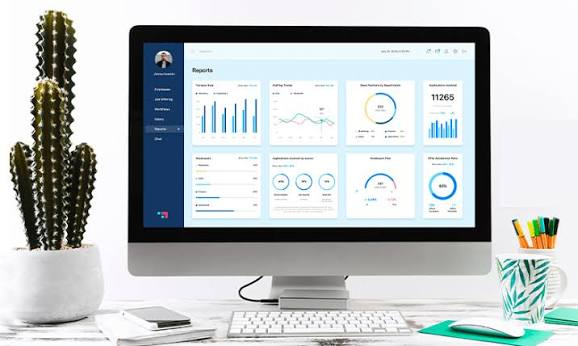

Anissa Kasem
Passionate Human Resource Specialist based in Conroe, TX.
About
Currently, I'm working towards my BBA at Texas Tech University with minors in Leadership Development and Human Resource Development. Outside of work and school, I volunteer at the Conroe Art League as a member while creating some of the art at the gallery. Professionally, my goals are to grow into a strategic HR and leadership role where I can develop people, improve systems, and bridge the gap between staff and organizational decision-makers.
Skills and Interests
- HR Administration and Compliance
- Payroll reconciliation and time-keying
- Employee Leave Coordination
- Systems thinking and process improvement
- Creative Writing and Storytelling
- Art and design
Projects
Here are some of the projects I've worked on:
-

HR Onboarding Overhaul
Created a welcoming onboarding experience for new hires with less paperwork, clear expectations, and a 30-60-90 day follow-up process to improve retention.
-
HR Data Dashboard Metrics
Built an interactive HR dashboard into our employee homepage that consolidates turnover, timekeeping expectations, leave balances, training completion, and data sources.
-
Employee Training Program
Designed a series of training modules to enhance employee skills and knowledge. This would cover performance coaching, legal basics, lesson plans, and knowledge checks on policies.